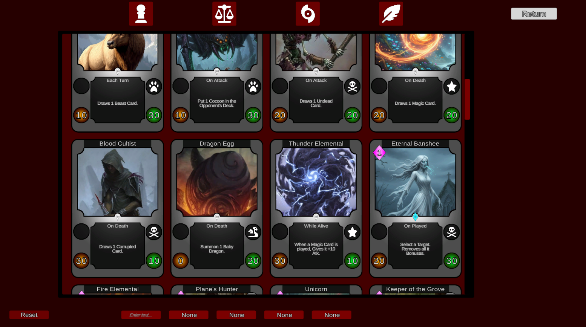
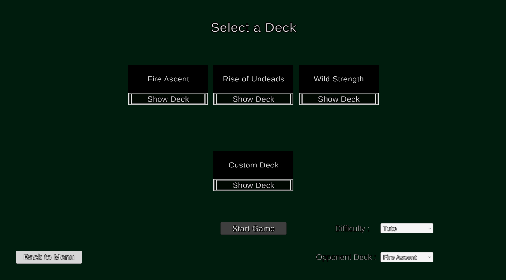
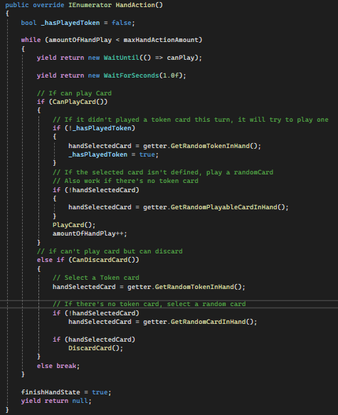
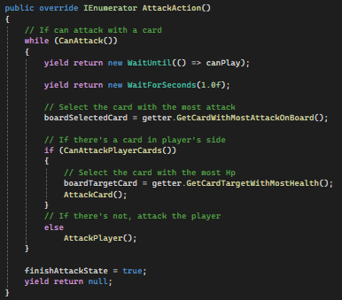
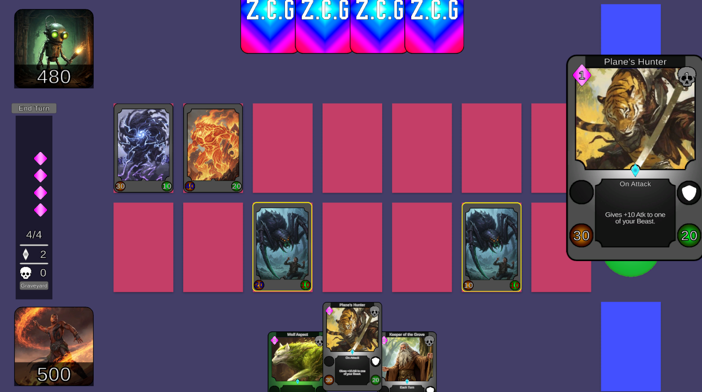

All of the cards' sprites are taken from Google, I do not possess any of them and I only used them for a more visual representation.
Deck Creation

In the deck creation segment, you can filter cards based on mutiple criteria :
Type
Element
Rarity
Effect
Example : Common, Beast, Fire, On Death
You can search cards by name as well, this will look up cards whose names include the text you've entered.
AI & Deck Selection

You can select between 3 premade decks or decks you've created.
After that, you can select up to 4 difficulties for the AI (made with an FSM) you will play against and one of the three premade decks for it.
For more inderstanding of the AI, there's some informations of the game :
Token Cards don't cost anything, but you can play only 2 or those each turns.
You can discard a card from your hand to draw another one (some cards has an effect when discarded)
AI breakdown :
Tuto : Hand : It will play one random card from its hand.Board : It will attack with one card on his board.
Easy : Hand : It will try to play one Token card and one random card. (will prefer cards that are not expensive)Board : it will try to kill a card on board with one of its played minion.
Normal : Hand : It will play cards until it can't play anymore, and after the 8th turn it will play the most expensive one.Board : It will try to attack with a card that has an effect on death and will search for a card on board that can kill them both.
After that, it will select the most powerful card and will target a weaker card (mainly it wants to keep you without cards on your board).
Hard : Hand : During the first turn, it will try to play a Token Card or discard one. After that, it will try to select a card from a priority list of effects (Draw, Deal Damages ,ect...)
and also with a condition priority (Spells, effect when played, on death, ect...). After the 7th turn, it will prioritize legendary cards.Board : Before attacking, it will verify if it can kill you with the cards it has on board, otherwise it will focus card that has an effect on death or when attacking.
It will also prioritize cards that can kill yours on board.


Gameplay Breakdown

You draw 3 cards at the start of the game. You have 3 resources during the game :
Token Points : Token Cards are weak but don't cost anything else, you can play 2 each turn.
Soul Shards : This is the primary resource of the game. Cards that aren't tokens cost an amount of Soul Shards.
Profane Ponts : This is a secondary resource of the game. When a card is destroyed, you gain 1 Profane Point. Some cards require an amount of this resource to be played.
Each turn, you can discard one card and draw another one.
Card on board need 1 turn before attacking.
The win condition is to put the opponent's health to 0, and the loss condition is to have your health amount reduced to 0.